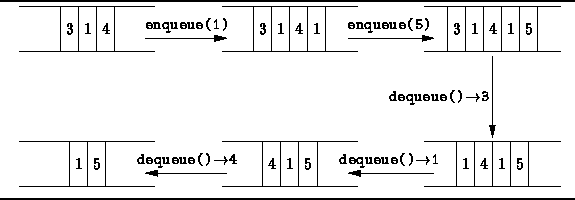

Data Structures and Algorithms
with Object-Oriented Design Patterns in Java
Data Structures and Algorithms
with Object-Oriented Design Patterns in Java
In the preceding section we saw that a stack comprises a pile
of objects that can be accessed only at one end--the top.
In this section we examine a similar data structure called a
single-ended queue .
Whereas in a stack we add and remove elements at the same end of the pile,
in a single-ended queue we add elements at one end
and remove them from the other.
Since it is always the first item to be put into the queue
that is the first item to be removed,
a queue is a first-in, first-out
or FIFO data structure.
Figure  illustrates the basic queue operations.
illustrates the basic queue operations.

Figure: Basic queue operations.
Program defines the Queue interface.
The Queue interface extends the Container
interface defined in Program .
Hence, comprises all the methods inherited from Container
plus the three methods,
getHead, enqueue, and dequeue.
As we did with stacks,
we examine two queue implementations--an array-based one and a linked-list one.
 Copyright © 1998 by Bruno R. Preiss, P.Eng. All rights reserved.
Copyright © 1998 by Bruno R. Preiss, P.Eng. All rights reserved.